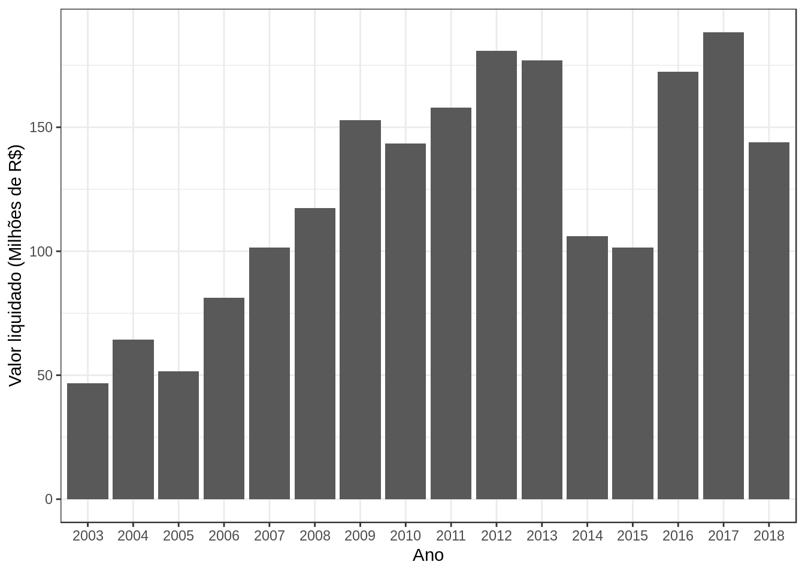

Explorando o orçamento da Secretaria Municipal do Verde e Meio Ambiente
Primeiro é necessário carregar os pacotes necessários:
library(dplyr)
library(ggplot2)Carregar o dataframe da execução orçamentária entre 2003 e 2018 (caso queira saber como esse arquivo foi gerado, clique aqui.
exec_orcamentaria_pmsp <- read_rds("data/exec_orcamentaria_pmsp.rds")Qual foi o orçamento gasto pela SVMA por ano? É importante considerar que o ano de 2018 está incompleto, pois ainda estamos em outubro.
exec_orcamentaria_pmsp %>% filter(Sigla_Orgao == "SVMA") %>%
mutate(Vl_Liquidado = Vl_Liquidado/1000000) %>% #transformar em milhões
group_by(Cd_Exercicio) %>%
ggplot()+
geom_col(aes(x = Cd_Exercicio, y = Vl_Liquidado))+
labs(
x = "Ano",
y = "Valor liquidado (Milhões de R$)"
) + theme_bw()
Quanto era o orçamento previsto por ano?
exec_orcamentaria_pmsp %>% filter(Sigla_Orgao == "SVMA")%>%
mutate(Sld_Orcado_Ano = Sld_Orcado_Ano/1000000) %>% #transformar em milhões
group_by(Cd_Exercicio) %>%
ggplot()+
geom_col(aes(x = Cd_Exercicio, y = Sld_Orcado_Ano))+
labs(
x = "Ano",
y = "Saldo Orçado (Milhões de R$)"
)+ theme_bw()